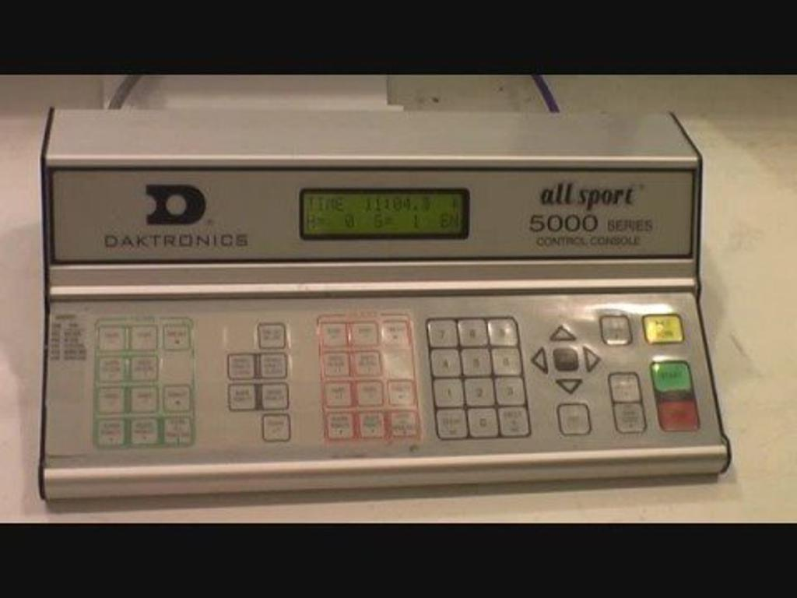

GET COMFORTABLE BEFORE PUCK DROP
Hockey timekeeper simulator.
Practise Daktronics All Sport 5000 score clock controls, penalties and game timing. Free guided training for rink volunteers on phones, tablets and computers.
Physical button positions preserved · swipe the console sideways on a phone
Know your console · Quick reference & realism notes

This is an independent Daktronics All Sport 5000 inspired training aid, with button groups checked against the manufacturer’s hockey overlay ↗ and a full console reference photo ↗. Greyed controls preserve positions but are not simulated. Firmware and peripheral behavior remain simplified. Confirm the installed overlay, sport code, rink procedures and league rules before a game.
Clock: STOP before SET MAIN CLOCK. Enter MMSS (e.g. 1500), then ENTER. START runs game time and enabled penalties. At zero the clock stops and the automatic horn sounds. Below one minute the display shows tenths.
Penalties: PLAYER PENALTY → jersey number → ENTER → MMSS → ENTER. Two active penalties per team; this trainer supports up to two and asks you to resolve additional penalties with your supervisor. Delete selects a penalty using 1 or 2, then ENTER. Penalties stay frozen while disabled, during timeouts, and at period end. Majors and coincidental penalties require league-specific handling; goals never automatically clear a penalty here.
Training differences: Time out uses a separate 30-second timer. Editing the main clock does not adjust penalty times. This trainer omits roster menus, shot clocks, queued penalties, misconduct administration, automatic penalty correction, and several peripheral controls. Shots/saves buttons record local practice counters in the log. Minor/major preset keys and team timeout recall are inactive. Period length is a practice preference, not a league rule.
Manufacturer support & manuals ↗ · All Sport 5000 operation manual ↗
Optional remote practice is available in Remote controls below the console. Review the accessory selector for supported hardware, connection rules and mode assumptions.